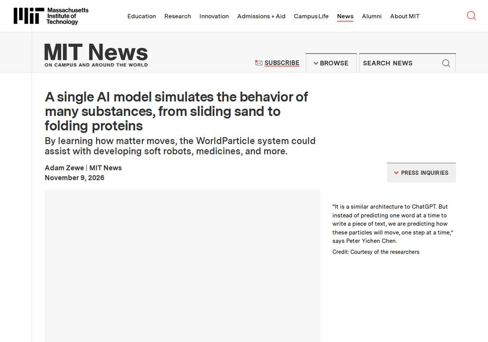

One AI Model Simulates Sand, Water and Folding Proteins
Researchers at MIT, the University of British Columbia and elsewhere built WorldParticle, a single deep-learning system that simulates many physical phenomena, from sliding sand to folding proteins, with one unified artificial intelligence architecture. The system represents materials as particles and predicts their movement one step at a time, modeling six phenomena with higher accuracy than numerical methods and protein structures about 100 times faster than numerical simulators. The work will be presented at the ACM SIGGRAPH Conference and Exhibition on Computer Graphics and Interactive Techniques in Asia.

- 01THE ANNOUNCEMENT — Researchers at MIT, the University of British Columbia and elsewhere built WorldParticle, a single deep-learning system that simulates many physical phenomena with one unified architecture, reported by MIT News on November 9, 2026.
- 02THE METHOD — WorldParticle breaks materials into thousands or millions of tiny 3D particles, predicts their movement one step at a time in one-second increments, separates external forces before each step and integrates them back in, and compresses particles with a merging technique to stay tractable.
- 03THE WATCHPOINT — Whether the model generalizes accurately to unseen materials and regimes, whether its accuracy holds against experimental validation rather than other simulators, and how the work is received when presented at SIGGRAPH Asia.
WHAT HAPPENEDWhat Happened
Researchers at MIT, the University of British Columbia and elsewhere built WorldParticle, a single deep-learning system that simulates many different physical phenomena, from sliding sand to folding proteins, with one unified artificial intelligence architecture. MIT News reported the work on November 9, 2026, ahead of its presentation at the ACM SIGGRAPH Conference and Exhibition on Computer Graphics and Interactive Techniques in Asia.
WorldParticle represents every material it simulates, from a dune of sand to a protein molecule, as tiny particles, and predicts where those particles will move one step at a time. Because it learns the underlying dynamics rather than being programmed with an equation for each phenomenon, the model can adapt to materials, forces and environments it never encountered during training. The team demonstrated it on six different physical phenomena with higher accuracy than numerical simulation methods, and modeled how protein structures change over time about 100 times faster than numerical simulators.
WHY IT MATTERSOne architecture instead of a simulator per phenomenon
Simulation today is a patchwork: every physical phenomenon needs its own hand-coded simulator, built by converting a governing equation into a formula a numerical solver can handle, repeated for each material and process. WorldParticle replaces that with a neural network that learns to solve governing equations in general. It breaks an object into thousands or millions of tiny three-dimensional dots using a Lagrangian representation, takes their 3D positions and physical properties as inputs, and outputs their positions and properties for the next frame, predicting motion in one-second increments.
The architecture is deliberately modeled on language models. As co-corresponding author Peter Yichen Chen puts it, it is a similar architecture to ChatGPT, but instead of predicting one word at a time, the model predicts how particles will move, one step at a time. Before each step, WorldParticle separates out external forces, such as an impulse force when an ocean wave slams into a seawall, predicts the particles' initial states, then integrates the forces back in to correct the prediction. A particle-merging technique compresses the computation so objects broken into millions of particles stay tractable.
WHY IT MATTERSA GPT moment for simulation, still a research system
The ambition is explicit: the team wants a foundation model that works out of the box for any scenario to simulate, a GPT moment for simulation. The demonstrated range already spans deformable objects, granular materials and proteins, with the granular collapse test capturing a pile forming while some baseline methods left sand particles floating in the air. The researchers point to soft robot manipulation, medicines, RNA evolution and even astrophysical phenomena like merging galaxies as applications, and want to build toward a full general-purpose simulation pipeline for scientific discovery.
The caveat is equally explicit in the framing. This is a first step toward a foundation model for simulation, not the finished article, and the generalization claim rests on the six demonstrated phenomena. Whether one architecture can cover new materials and regimes without retraining, and whether its accuracy holds where experimental validation is thin, will decide whether WorldParticle becomes a tool scientists rely on or a striking demonstration. The next evidence comes at SIGGRAPH Asia, where the work is presented.
SIGNAL JUDGMENT — ANALYSISSimulation wants its foundation model
Tokenta Signal's judgment: WorldParticle is the clearest attempt yet to give simulation the foundation-model treatment, and the framing is honest about where it stands. One architecture that learns dynamics instead of one hand-coded solver per phenomenon would change how scientists explore materials, proteins and soft robots, if the generalization holds beyond the six demonstrated cases. The 100-times-faster protein modeling figure is the number that will draw attention, but the test that matters is accuracy on systems the model has never seen, checked against experiment rather than against other simulators. Until then this is a strong research result with a large claim, not a tool to build on.
WHAT REMAINS UNCERTAINWhat Remains Uncertain
EVIDENCEEvidence

Researchers at MIT, the University of British Columbia and elsewhere built WorldParticle, a single deep-learning system that simulates many physical phenomena, from sliding sand to folding proteins, with one unified architecture, modeling protein structures about 100 times faster than numerical simulators.
PRIMARY SOURCESPrimary Sources
- MIT News: A single AI model simulates the behavior of many substances, from sliding sand to folding proteins
https://news.mit.edu/2026/single-ai-model-simulates-many-substances-behavior-1109 - HK Businesswire: A single AI model simulates the behavior of many substances, from sliding sand to folding proteins
https://hkbusinesswire.com/a-single-ai-model-simulates-the-behavior-of-many-substances-from-sliding-sand-to-folding-proteins/